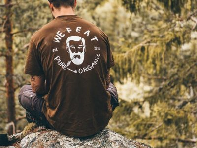

Hvorfor Økologisk
Når du køber økologisk, er du med til at skabe bedre dyrevelfærd, mere natur og passe godt på vores miljø. Økologi er omdrejningspunktet for vore butikker og for os handler det om at tage sig bedre af sig selv og sine kære.

Hvorfor en bowl
En bowl er ikke bare en salat. Det er et velforberedt måltid, der er skabt for at tilfredsstille og nære dit system helt ned til cellulære niveauer. Vi modtager primært varer fra Hørkram, som er den mest pålidelige leverer af økologiske varer, men støtter også primært lokale producenter.